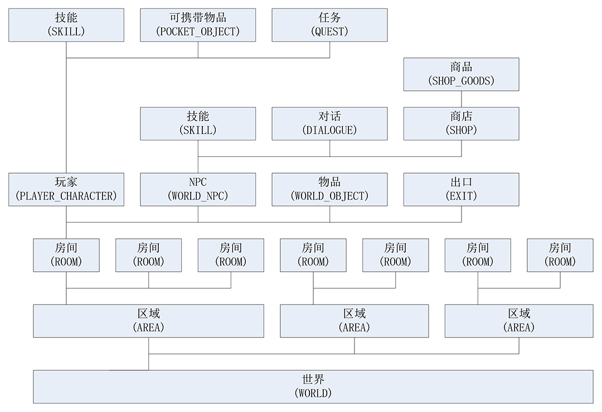

6. 游戏世界架构¶
Muddery的游戏世界是通过一个个元素（Element）构建起来的，整个游戏世界就是一个元素，游戏中的角色、房间、物品都是一个个元素。
游戏中元素的关联关系如图
世界（WORLD）
游戏中最基础的元素是“世界”，一个游戏服务器中只有一个世界，游戏中的所有物体都是运行在这个世界之上的。一个世界上可以有多个区域（AREA）。
区域（AREA）
一个区域对应一张地图，玩家在客户端查看地图时只能看到当前所在区域的地图，设计师在游戏编辑器里一次也只能编辑一个区域。一个区域上可以有多个房间（ROOM）。
房间（ROOM）
房间是进行游戏活动的基本场所，房间里可以有各种物体，包括出口（EXIT）、玩家（PLAYER_CHARACTER）、NPC（WORLD_NPC）和物品（WORLD_OBJECT）等。玩家只能处于某个房间之中，只能到当前所在房间里的物体。可以和房间中的其他玩家、NPC、物品交互，可以通过房间里的出口（EXIT）从一个房间移动到另一个房间。
出口（EXIT）
出口是从一个房间通往另一个房间的通道，玩家和NPC可以通过出口从一个房间移动到另一个房间。在Muddery中出口是单向的，只能让玩家从一个房间移动到另一个房间。如果要从另一个房间回到之前的房间，那就要在另一个房间中创建一个通往之前房间的出口。
在Muddery中还有一种带锁的出口（LOCKED_EXIT），玩家需要符合特定的条件才能穿过它，比如完成了某个任务或携带了某件物品。
世界物品（WORLD_OBJECT）
一个世界物品只会出现在一个世界的一个房间中，所以称为世界物品。世界物品不会在房间之间移动，玩家可以和物品进行交互，设计师可以给物品添加不同的功能。
世界NPC（WORLD_NPC）
一个世界NPC只会出现在一个世界的一个房间中，所以称为世界NPC。NPC可以在房间之间移动，玩家可以和NPC对话、交互、打斗，设计师可以给NPC添加不同的功能。如果给NPC添加了商店（SHOP），玩家还可以向NPC购买商品。
技能（SKILL）
玩家和NPC可以拥有多个技能，可以天生自带，也可以后天学习，有些技能能在战斗中使用，有些技能能在平时使用。设计师可以设计各种技能给玩家或NPC使用。
对话（DIALOGUE）
设计师可以给NPC设置一个或多个对话，还可以给它们加上条件。当玩家符合特定条件时，NPC有会用相应的对话和玩家交互。
商店（SHOP）
可以给NPC设置商店功能，一个商店里可以有很多商品（SHOP_GOODS），玩家可以向NPC购买这些商品。
商品（SHOP_GOODS）
商品可以在商店中出售，设计师可以给商品设置购买的价格和数量。
玩家角色（PLAYER_CHARACTER）
玩家角色是玩家在游戏中可以操纵的角色，玩家可以控制它从一个房间移动到另一个房间，可以与其他玩家交互、打斗。
可携带物品（POCKET_OBJECT）
可携带物品包括普通物品、装备（EQUIPMENT）、食物（FOOD）、技能书（SKILL_BOOK）等。只有可携带物品才能放入玩家的行囊。
任务（QUEST）
设计是可以给玩家设计各种任务，玩家可以接受任务、完成任务、取得任务奖励。游戏的剧情可以通过任务来推动。任务的完成情况还可以影响玩家和NPC、物品的交互。